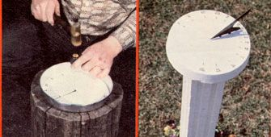
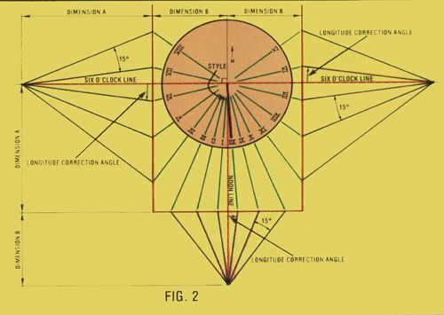
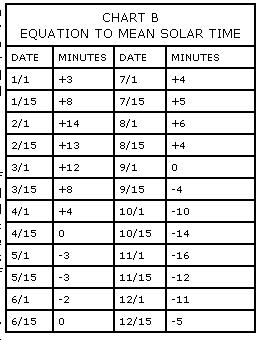

In times such as these-when high technology sems to complicate every aspect of our lives- it's all too easy to forget the natural reasons for the things we do. But one way to get back in touch with time is to build a...
While a clock is actually little more than a mechanical or electronic contraption that mimics the temporal progression of the earth's revolution about its axis, a perusal of the timepieces in a typical jewelry store's display cabinet might convince one that the business of telling time has become downright bewildering in our "digital age". One informal study recently found that half of a group of Ph.D.'s weren't even able to operate one particular watch without referring to the owner's manual. (In fact, the chronometer's manufacturer suggests that wearers always carry their instruction booklets along!)
It's puzzling that devices conceived to ease humankind's burden (by substituting gears and/or circuitry for human calculation) have come full circle and are now more complex to use than were the first clocks: sundials. And in truth, much of the ciphering that is necessary to tell time accurately with a sundial has resulted from our complex manmade system of time zones (which often fail to follow meridians-and, therefore, the progression of the globe's revolution-accurately), the creation of mean solar time, and the vagaries of "daylight-saving time" .. . all of which can be seen as questionable meddlings in our daily dealings with the sun.
And, whether your interest in sundials stems from a reaction to the arbitrary way we've come to look at the concept of time . . . historical curiosity . . . a desire to get a little closer to the ways of nature . .. or just a love for the uncomplicated workings of a "helioclock", we think you'll find that building one of the devices is an interesting project that will produce an attractive (and useful) addition to your yard or garden.
GETTING THE LAY OF YOUR LAND
In order to lay out the face of a sundial, you'll need to know your location in terms of latitude and longitude. So start the project by consulting an atlas to find out where on the world you are. Latitude lines run across the map, from east to west (or vice versa) and will be marked "North" if you live above the equator. Longitude marks run north-south and will be designated as "West" if you are located in the Western Hemisphere. (Please note that all of the rest of the instructions in this article apply only to the Western Hemisphere, north of the equator.)
LAYING OUT THE DIAL FACE
At this point you should decide how large a sundial you wish to build. Faces can be designed in any reasonable size (though larger dials allow more accurate readings), but we chose a 9"-diameter circle because a 1-1/2"-deep, 9"-wide cakepan provided us with a very convenient mold. The diameter of your "clock's" face will become Dimension A in the drawings.
The other dimension needed to lay out your sundial can be calculated by first drawing a semicircle using Dimension A as the diameter (see Fig. 1). Construct a tangent perpendicular to the diameter of the half circle, and then scribe a line that diverges from the intersection of the diameter and the tangent at an angle equal to your latitude. The length of the chord which is described by that line's intersections with the semicircle will become Dimension B.
You can now begin to draw the dial face on a piece of tracing paper. Prepare a threesided figure like the one depicted by the solid red lines-and according to the dimensions specified-in Fig. 2. The dashed red lines in the same illustration indicate the noon and six o'clock lines, which intersect each other at a 90° angle at the focus (or center) of the dial. Extend the two broken lines perpendicularly from the solid red lines to points that are a distance equal to Dimension A beyond the three-sided figure on the six o'clock line, and a distance equal to Dimension B below it on the noon line . . . as shown.
CHART A
TIME ZONE MERIDIANS
Eastern Standard Time = 75° West
Central Standard Time = 90° West
Mountain Standard Time = 105° West
Pacific Standard Time = 120° West
Each of the three points thus arrived at will now serve as a focus from which the hour line determinants (Fig. 2 shows them in blue) will radiate at 15° intervals. But before you can put those reference lines on paper, it's necessary to figure out the correction factor for your longitude's difference from your time zone's meridian.
Consult Chart A to learn whether you're situated to the east or to the west of your time zone's meridian. In either case, subtract the smaller number from the larger one. If your location's longitude happens to be west of the time zone longitude, correct for the difference by rotating the six o'clock and noon lines clockwise-from their three respective focuses-that number of degrees. But if your home is located to the east of your time zone's meridian, correct by rotating the six o'clock and noon line determinants counterclockwise. (A clockwisewest of meridian-correction is shown by the blue lines in Fig. 2.)
With that done, you can proceed to place the hour line determinants on the paper by marking off a 15° increment for each hour, as shown, and then connecting the focus of the dial to the points where the determinants intersect the solid red lines. These connecting lines, shown in green in Fig. 2, will become the hour lines on the sundial's face. Complete the dial by scribing its perimeter (with a diameter equaling Dimension A) and lettering the Roman numerals.
MAKING THE DIAL
We cast our sundial's face from concrete, first indenting the Roman numerals and the hour lines in the bottom of the 9"-diameter cakepan ... by means of a 1/4"-blade screwdriver and a rubber mal let. In order to have the numerals correctly oriented, the paper must be laid face down in the pan so that the markings will appear backwards when they are transferred to the metal. The inscriptions will then be reversed on the casting, and the face will be "right side to". (If you use the cakepan, screwdriver, and mallet technique, be sure that you back up the pan with end-grain wood and don't pound too hard ... or you'll pierce the container's metal bottom.)
Since the style must be attached to the dial face, you'll need to make allowances for it in the casting. We simply poked two 6-penny nails through the bottom of the pan on the (corrected) noon line, slipped the rubber insulation from some No. 12 wire over the nails, and cast the concrete around them. You should also-before you pour-prepare the mount for the dial itself . . . by hanging a 20-penny nail, from a wire, exactly in the center of the pan and not quite touching its bottom. (The two smaller nails will leave holes in the finished casting, and the bigger one will remain fixed in the concrete.)
To get the smoothest surface possible, we combined two parts cement and one part sand, oiled the inside of the pan, and poured the mixture directly in. We then kept the assembly covered with wet rags for two days to insure very slow curing.
THE STYLE
Your latitude will determine the angle of the style, as indicated in Fig. 3. Although the exact shape-beyond the angle-isn't critical, we've provided you with a basic profile to follow. Our style was made from 18-gauge steel, but any material of similar integrity should be acceptable.
To mount the shadow-caster, you'll need to solder two 6-penny nails-with their heads cut off-to the base of the style. Since the spikes must slip into the holes in the concrete face, and the apex of the latitude angle must be at the dial's focus, be sure to space the nails in accord with the prepared apertures.
THE POST
A number of methods could be used when mounting the dial, but we elected to continue working with concrete. The post's forms were made from 1 X 6 and 1 X 4, with screen door molding tacked inside to provide relief. A 40" length of 5/16" steel fuel line was set down the middle of the form, and a piece of lath with a hole served to hold the tube in place while the concrete was poured. The same two-to-one mixture of cement and sand was used to form a 39"-long post.
PAINT AND ASSEMBLE
As you can see in the photo, we painted both the dial and the post white . .. and then coated the raised Roman numerals, the hour lines, and the style with black paint to provide contrast.
To put the pieces together, just sink the post-so that it's exactly vertical-to a depth of six to nine inches at the chosen spot in your yard or garden, slide the 20-penny nail on the bottom of the dial into the 5/16" fuel line in the top of the post, and slip the two nails on the base of the style into the holes in the face.
If your post was placed vertically, your sundial's face should be horizontal . . . but it's a good idea to check it with a carpenter's level anyway. Once you've made any necessary adjustment, you'll need to orient the original noon line (not the one shown by the style) to due north. You can do this by sighting down the (now imaginary) line toward the North Star at night . . . by using a compass (corrected for the local variation between magnetic and true north) . . . or by turning the dial so that it reads noon when your watch does (provided the wristmounted timepiece is set on standard, not daylight-saving, time).
TIME-OF-YEAR CORRECTION
Because vagaries in the earth's orbit, and in its relationship to the sun, cause the length of the day that we observe to vary through the year, corrections must be made to the sundial reading to maintain its agreement with the 24-hour mean solar day, which mechanical (and electric) watches record the passage of. If your sundial is intended primarily for aesthetic purposes (and you can afford to disregard 15 minutes here or there), you can ignore the equation of time correction. But if you would like to read your solar clock as accurately as possible, you'll need to keep a listing-such as Chart B-or a graphic representation of correction factors somewhere on or near your sundial.
Of course, once you've gone to all the trouble of making an accurate sundial, there'll likely come a day each spring when public decree will cause your solar timepiece to be off by one hour throughout the warmer months. It would be possible to build a dial to register daylight-saving time, but it's far easier just to add in the extra hour yourself . . . and leave the face less cluttered.
After all, one of the greatest beauties of a sundial is its utter mechanical simplici ty. And if anyone tries to make fun of the relic in your yard, just ask the joker if he or she happens to be referring to your solarpowered clock . . . which keeps accurate time, yet has no moving parts to wear out!
|
 |
 |
 |